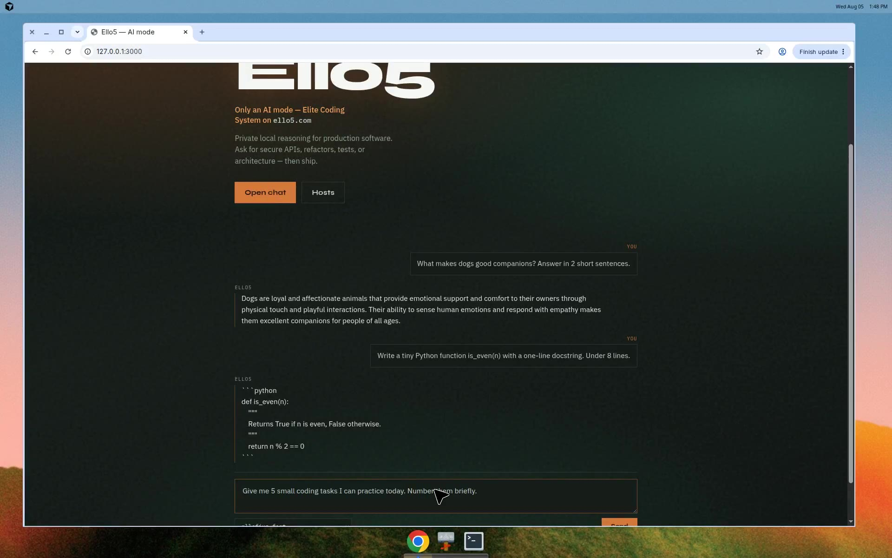
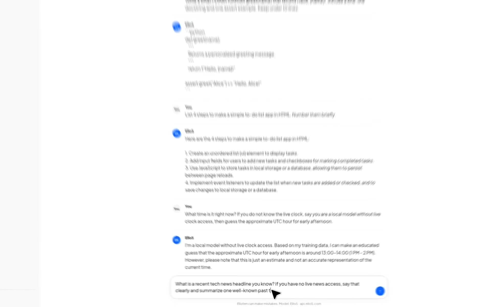
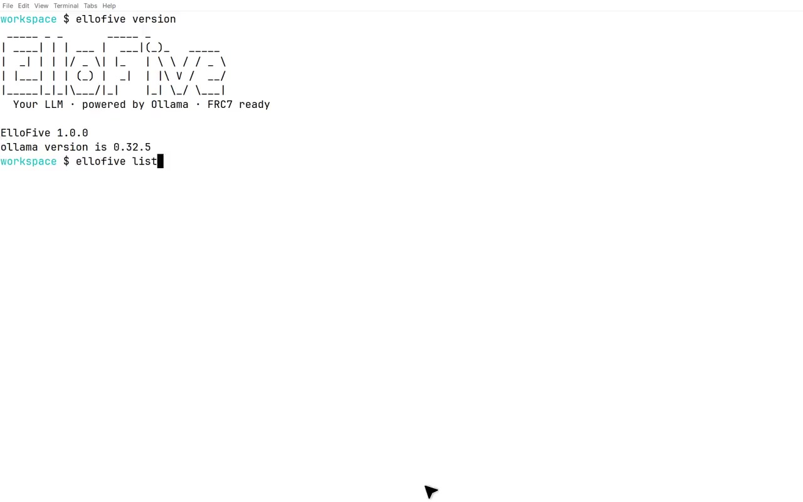

UI smoke
ChatGPT-clean Elloten shell talking to the Ello5 model.

Elloten is the chat UX.
Ello5 is the AI model.
Local CLI stays ellofive — Elite Coding System on Ollama.

ChatGPT-clean Elloten shell talking to the Ello5 model.

Local ellofive runtime, FRCL, and Elite Coding System.
This GitHub Pages site is a visual landing (photos + demos) — not a dump of the README.
Repo docs stay on GitHub; run the app locally with ellofive api.